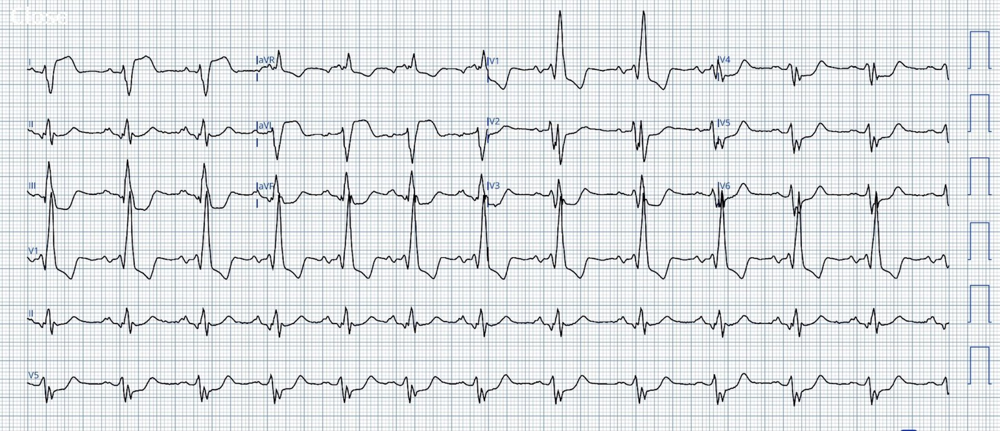
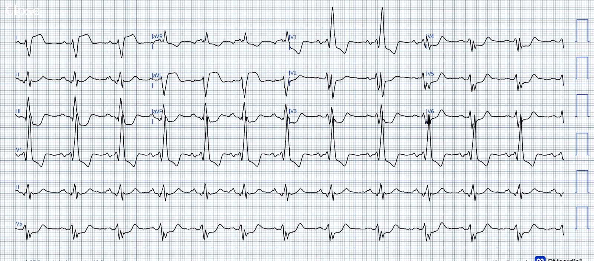
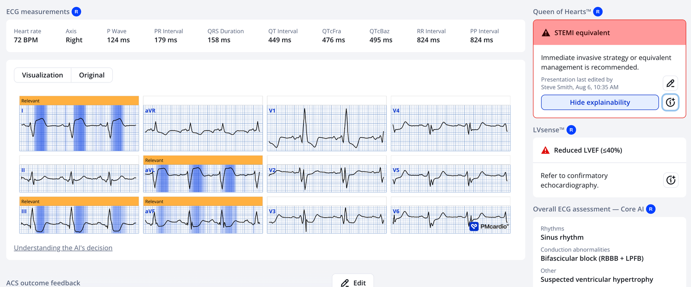
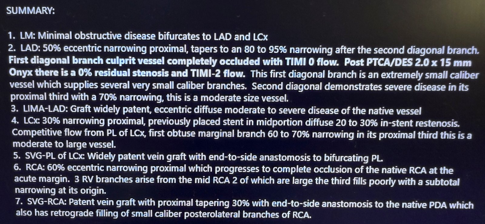
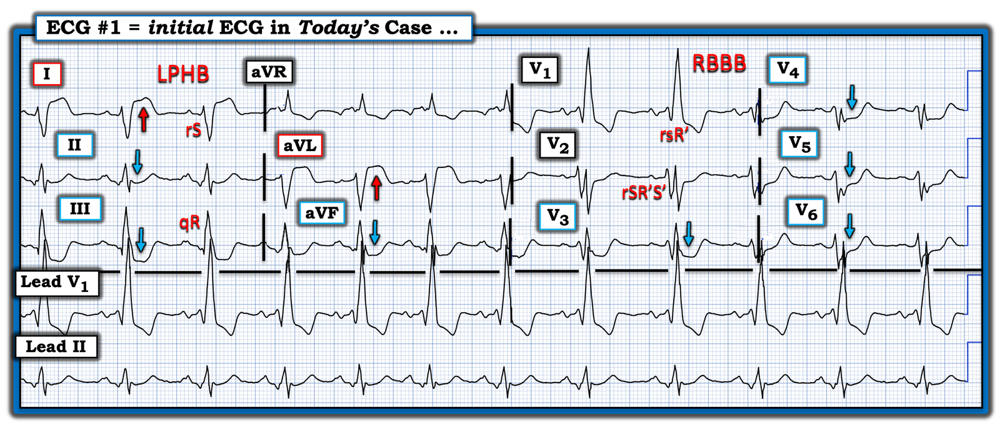
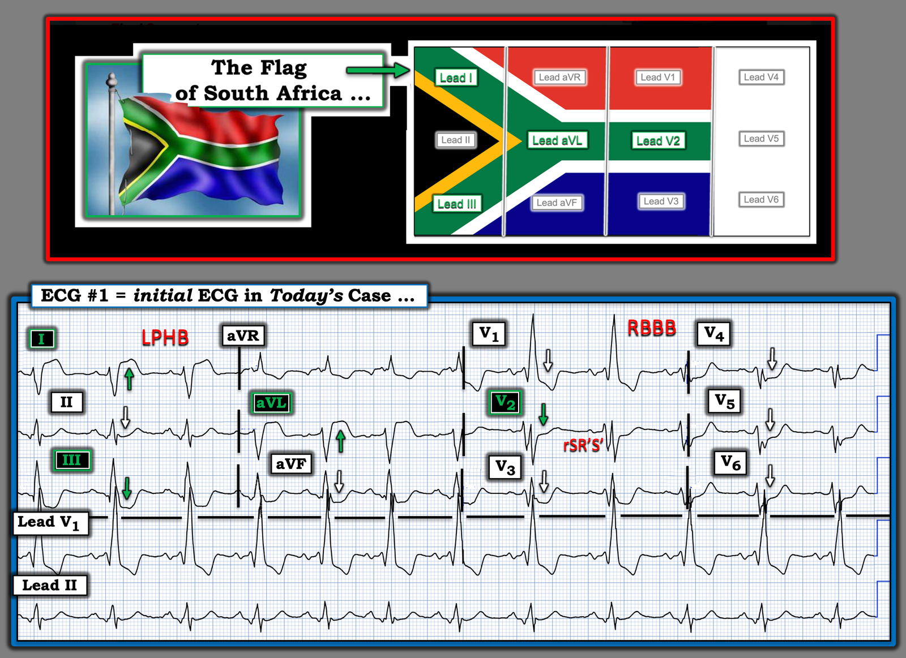

Dù không thấy ECG đáng ngại, hãy dùng Queen of Hearts. “Nữ hoàng” có thể khiến bạn bất ngờ – dù ca này lẽ ra chẳng có gì bất ngờ
Bản dịch tiếng Việt của bài "Even if you are not impressed, use the Queen of Hearts. She may surprise you. Though this one really shouldn’t be a surprise." – Dr. Smith’s ECG Blog. Giữ nguyên toàn bộ 5 hình ảnh của bản gốc.


Ca này do một cựu bác sĩ nội trú gửi tới.
Bệnh nhân nữ trung niên, tiền sử bệnh mạch vành và đã mổ bắc cầu chủ – vành (CABG), vào viện vì đau ngực:


Bạn nghĩ gì?
Smith: Có RBBB kèm blốc phân nhánh trái sau (left posterior fascicular block) (sóng q nhỏ ở các chuyển đạo thành dưới theo sau là sóng R lớn, và ở aVL có sóng r nhỏ theo sau là sóng S lớn. Vậy là: blốc hai phân nhánh (bifascicular block). Không nghiêm trọng bằng RBBB + LAFB, nhưng vẫn là blốc hai phân nhánh. Chúng ta không biết là mới hay cũ. Có ST chênh lên lớn ở I và aVL. Có ST chênh xuống sâu ở V2-V6, tối đa ở V3. ST chênh xuống ở V2 đồng hướng (concordant) với sóng S của RBBB. ST chênh xuống ở V3 nghịch hướng (discordant) với sóng R’ của RBBB là phù hợp, nhưng lại quá mức tương xứng (out of proportion)! Vì vậy, hình ảnh này giống tắc động mạch mũ (circumflex) gây OMI (nhồi máu cơ tim do tắc động mạch – occlusion MI) vùng bên cao và thành sau. Các động mạch khác cũng có thể gây nhồi máu ở vùng này.
Bác sĩ điều trị không thấy ECG này đáng ngại.
Đồng nghiệp của anh ấy là một trong những cựu bác sĩ nội trú của tôi, và anh ấy thì thấy đáng ngại. Anh ấy đã dùng PMCardio Queen of Hearts và đây là kết quả:


Kết quả này đã thuyết phục đồng nghiệp của anh ấy kích hoạt phòng thông tim.
Đây là kết quả:
LAD: hẹp lệch tâm 50% đoạn gần, thuôn dần thành hẹp 80-95% sau nhánh chéo thứ 2. Nhánh chéo thứ nhất tắc hoàn toàn, dòng chảy TIMI-0.
Đây là toàn bộ báo cáo thông tim:


= = =
==================================
BÌNH LUẬN CỦA TÔI, bởi KEN GRAUER, MD (9/30/2026):
Ca bệnh hôm nay của Dr. Smith là một “bữa tiệc” cho những ai ham tìm hiểu! Tôi nói vậy vì tôi tin rằng ca này là một dấu hiệu Lá cờ Nam Phi (South African Flag Sign) dương tính độc đáo nhưng hấp dẫn, ở một bệnh nhân bị blốc hai phân nhánh với phức bộ QRS phân mảnh nhiều chỗ.
= = =
Đặt ca bệnh hôm nay vào bối cảnh:
Ca bệnh hôm nay có 2 khía cạnh quan trọng:
- #1) = Khía cạnh chẩn đoán quan trọng về lâm sàng: Như cựu bác sĩ nội trú của Dr. Smith đã nhận định — ECG ban đầu hôm nay là một bản ghi cực kỳ đáng lo ở người phụ nữ trung niên này, vốn đã biết có bệnh mạch vành, nay đến khám vì CP mới (Chest Pain – đau ngực). Bản ghi này hoàn toàn đủ cơ sở cho quyết định kích hoạt phòng thông tim ngay đã được đưa ra.
- #2) = Những chi tiết tinh tế hấp dẫn trên ECG ban đầu (Xem bên dưới).
= = =
ECG ban đầu …
Để dễ theo dõi, trong Hình 1 — tôi đã vẽ lại và đánh dấu bản ghi ban đầu. Như Dr. Smith đã nêu — các bất thường trên ECG #1 gồm:
- Loạn nhịp xoang (sinus arrhythmia) tần số ~70/phút với phức bộ QRS phân mảnh nhiều chỗ và giãn rộng rõ rệt. Tôi diễn giải hình rSR’S’ ở chuyển đạo V2 (cùng các phức bộ phân mảnh tương tự ở những chuyển đạo trước ngực còn lại) là “tương đương sóng Q” (Q-wave-equivalents) do sẹo của nhồi máu cũ.
- Có blốc hai phân nhánh dưới dạng RBBB/LPHB (chẩn đoán dựa vào rsR’ ở V1 — và dạng rS/qR ở chuyển đạo I và III, với sóng S rất sâu ở chuyển đạo I).
- Vì phân nhánh trái sau lớn hơn và dày hơn phân nhánh trái trước rất nhiều — nên LPHB thực sự gặp ít hơn hẳn so với LAHB.
- Dù vậy, khi bạn gặp LPHB thực sự — điều đó thường có nghĩa là có bệnh lý cấu trúc nền lan rộng — đó cũng là một lý do nữa khiến LPHB thực sự hầu như luôn đi kèm RBBB.
- Vì vậy — tôi nghi ngờ rằng sự kết hợp RBBB/LPHB + các phức bộ phân mảnh nhiều chỗ ở phần lớn trong 12 chuyển đạo của Hình 1 là dấu hiệu cũ do nhồi máu cũ diện rộng ở một bệnh nhân có bệnh mạch vành nền nặng (Tìm được ECG nền trước đây của bệnh nhân này sẽ vô cùng giá trị để xác nhận nghi ngờ của tôi).
- Ngược lại — kết hợp RBBB/LAHB gặp phổ biến hơn nhiều so với RBBB/LPHB. Khi RBBB/LAHB xuất hiện cấp tính và đi kèm ST chênh lên ở các chuyển đạo trước — dạng blốc hai phân nhánh này cho biết có tắc cấp đoạn gần LAD kèm tổn thương cấp đáng lo ở hệ thống dẫn truyền.
- Ở các chuyển đạo chi: Có ST chênh lên ấn tượng (3-4 mm! ) ở chuyển đạo I và aVL — kèm ST chênh xuống ấn tượng không kém ở các chuyển đạo thành dưới (cũng như ST chênh xuống ở từng chuyển đạo trước ngực).
- Dù khó (không thể?) phân biệt “mới” với “cũ” với “mới-chồng-lên-cũ” chỉ từ một ECG này — mức độ ST chênh lên và ST chênh xuống như vậy ở bệnh nhân nay đến vì CP mới — phải được xem là một OMI cấp đang tiến triển cho tới khi chứng minh được điều ngược lại (Ở thời điểm này của quy trình — việc xác định tổn thương “thủ phạm” cấp tính chỉ là một bài tập học thuật, trở nên lu mờ khi biết rằng cần kích hoạt phòng thông tim ngay!).
= = =
Hình 1: ECG ban đầu trong ca hôm nay. (Để dễ quan sát hơn — tôi đã số hoá ECG gốc bằng PMcardio).


= = =
Lá cờ Nam Phi + Blốc hai phân nhánh
Dù hoàn toàn nhận thức rằng ưu tiên cao nhất trong ca hôm nay là đẩy nhanh thông tim và PCI — tôi vẫn tò mò muốn biết Vì sao ST chênh xuống ở chuyển đạo V2 lại tương đối ít so với 5 chuyển đạo trước ngực còn lại?
- Nghi ngờ của tôi: ECG ban đầu này là một dấu hiệu Lá cờ Nam Phi ở bệnh nhân bị blốc hai phân nhánh và bệnh mạch vành nền nặng.
Chúng tôi đã giới thiệu nhiều ca hình ảnh Lá cờ Nam Phi trên Dr. Smith’s ECG Blog — như một dấu hiệu của tắc cấp nhánh chéo thứ 1 hoặc thứ 2 của LAD.
- Như được làm nổi bật ở phần trên của Hình 2 — hình ảnh Lá cờ Nam Phi được nhận diện qua các dấu hiệu:
- ST chênh lên ở chuyển đạo I và aVL;
- ST chênh xuống soi gương (reciprocal) ở chuyển đạo III;
- ST chênh lên ở chuyển đạo V2 — nhưng không có ở bất kỳ chuyển đạo trước ngực nào khác (các chuyển đạo này thường có ST chênh xuống).
Dù không có chuyển đạo trước ngực nào trong Hình 2 có ST chênh lên — tôi thấy chuyển đạo V2 đáng chú ý vì ST chênh xuống rất ít so với 5 chuyển đạo trước ngực còn lại.
- Tôi nghi lý do của việc ST chênh xuống tương đối ít ở chuyển đạo V2 — đơn giản là ST chênh lên lẽ ra đã thấy ở chuyển đạo V2 do tắc nhánh chéo thứ 1 cấp đã được thông tim xác nhận ở bệnh nhân này — đã bị làm giảm đi bởi ST chênh xuống rõ rệt, là hậu quả của tác động kết hợp giữa RBBB và thiếu máu cục bộ dưới nội tâm mạc lan toả nặng ở bệnh nhân này.
= = =
Hình 2: Tôi thấy dấu hiệu Lá cờ Nam Phi dương tính.


= = =
= = =